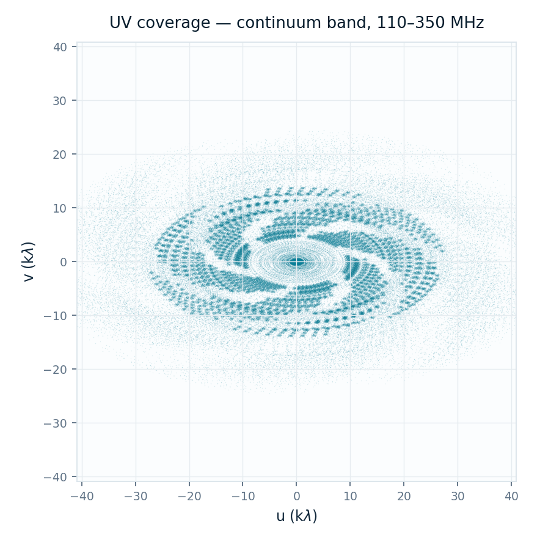

calibrated_visibilities.ms
Calibrated visibilities QA · scheduling block SB-2028-0412-0017
98QA score
QA passed
All automated checks passed for this data product. No blocking or advisory issues recorded.
Measurement Setcalibrated_visibilities.ms
Scheduling blockSB-2028-0412-0017
Number of antennas204(207 total · 3 excluded)
Number of baselines20,706
Number of channels4,096continuum SPW
Time resolution0.9s
Polarisation products4XX, XY, YX, YY
Size on disk14.8TB
TargetsELAIS-S1, PKS 0349−27, NGC 1566, RXC J0528.9−3927
Spectral window information
SPECTRAL_WINDOW subtable summary
| ID | Name | Frequency | Channels | Resolution | Role |
|---|---|---|---|---|---|
| 0 | LOW_CONT_110_350 | 110–350 MHz | 4,096 | 58.6 kHz | Continuum |
| 1 | LOW_ZOOM_150 | centre 150.000 MHz | 16,384 | 0.76 kHz | Zoom 1 |
| 2 | LOW_ZOOM_325 | centre 325.000 MHz | 8,192 | 1.53 kHz | Zoom 2 |
Baseline distribution & flagging statistics
Array geometry and RFI/calibration flags applied to this Measurement Set
Placeholder
Baseline length distribution — 38 m to 65.1 km
Placeholder
Flagged visibility fraction by antenna and channel
Calibrated phase & amplitude vs time
Bandpass calibrator · J0408−6545
Calibrated amplitude vs UV-distance
Bandpass calibrator · J0408−6545
Calibrated amplitude vs frequency
Target fields · ELAIS-S1, PKS 0349−27, NGC 1566, RXC J0528.9−3927
Placeholder
Calibrated amplitude vs frequency — target fields, overlaid
Continuum UV-coverage
LOW_CONT_110_350 · representative channel

uv-coverage, continuum band, representative channel
Static interface mock-up · representative data only